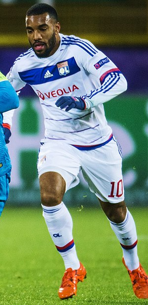

Alexandre Lacazette
Présentation
Alexandre Lacazette, né le 28 mai 1991 à Lyon, est un footballeur international français qui évolue au poste d'attaquant à l'Olympique lyonnais. Attaquant prolifique, il termine meilleur buteur et meilleur joueur de la saison 2014-2015 de Ligue 1, avec 27 buts. Auteur de plus de 130 buts sous le maillot lyonnais dont plus de 100 en Ligue 1 depuis ses débuts professionnels en 2008, il est le quatrième meilleur buteur de l'histoire de l'Olympique lyonnais.
Il inscrit son premier but en Ligue 1 avec l'OL le 30 octobre 2010, lors d'une rencontre face à Sochaux. Il fait sa première apparition en Ligue des champions le 2 novembre 2010 en entrant en jeu contre le Benfica Lisbonne lors de la 4e journée des phases de poules et délivre à cette occasion deux passes décisives dans la défaite (3-4) de son équipe. Il inscrit son premier but dans cette compétition lors de la 6e journée, le 7 décembre 2010 contre l'Hapoël Tel-Aviv (2-2) où il marque le but égalisateur.
Biographie
Originaire des Abymes en Guadeloupe, où il se rend souvent pour se ressourcer1, Lacazette commence le football dans le club de l'Élan Sportif du 8e arrondissement de Lyon, situé dans son quartier à Mermoz avant d'intégrer le centre de formation de l'Olympique lyonnais lors de l'année 2003.

Sont palmares
En club
- Championnat de France des réserves professionnelles en 2009, 2010 et 2011
- vice-champion de France en 2010, 2015 et 2016
- Coupe de France en 2012
- Community Shield en 2017
- finaliste de la Ligue Europa en 2019
En selection
- Championnat d'Europe des moins de 19 ans en 2010